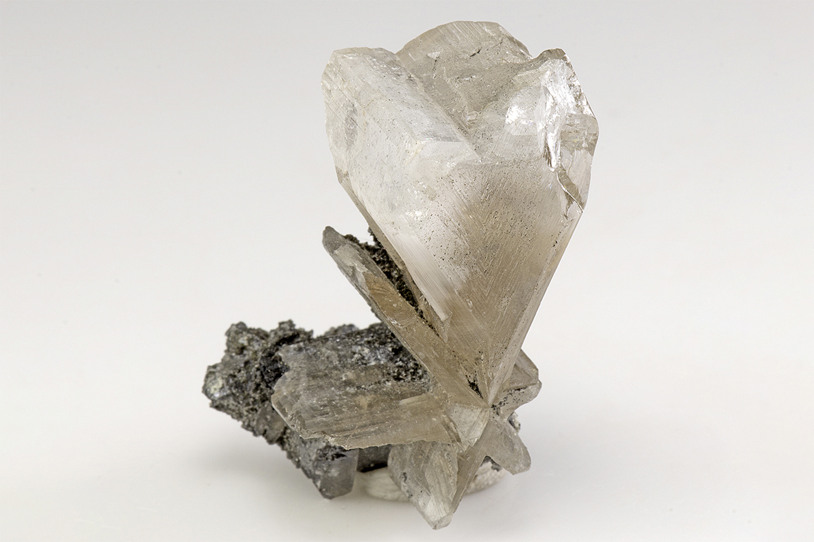

Cerussite
"Cerussite Twin"
V-01575
Tsumeb Mine (Ongopolo Mine), Tsumeb, Oshikoto Region, Namibia
Purchased 7/2/2019 from Dan Weinrich Fine Minerals for $16.94
Core Collection • In Collection
Details
Storage Type: Drawer
Storage Location: C1D1 The First Drawer Miniatures
Size class: Miniature (0)
Dimensions: 3.5 × 2.0 × 2.0 cm
Mass: 22 g
Luster: Unrecorded